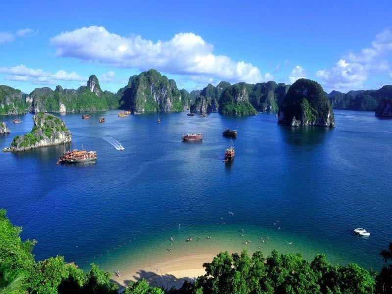
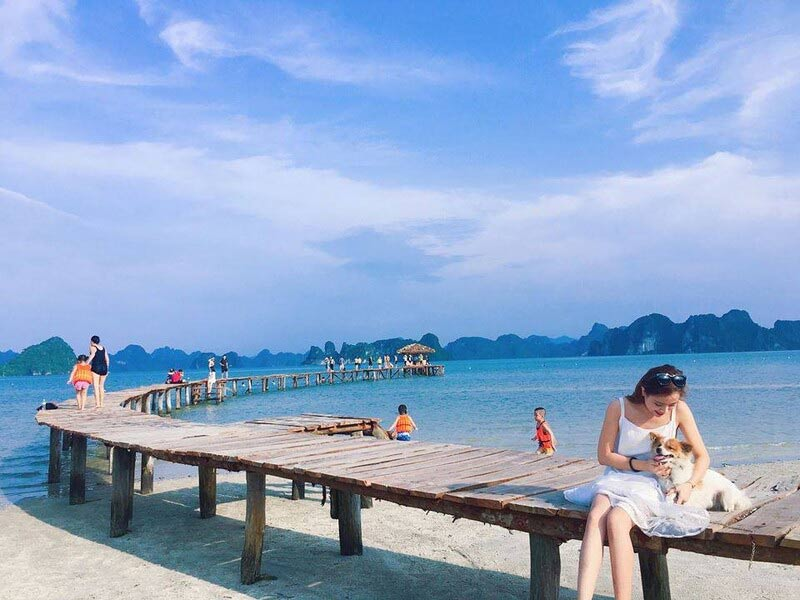
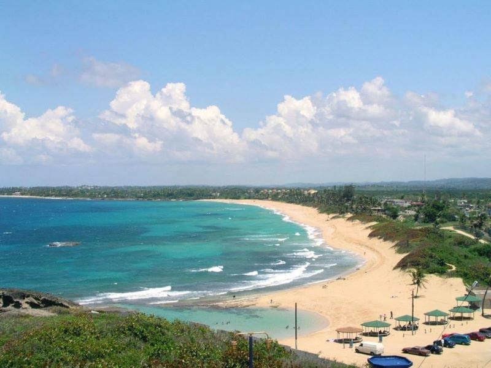
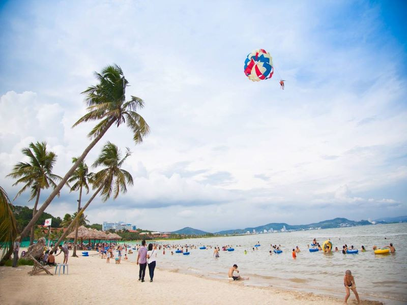
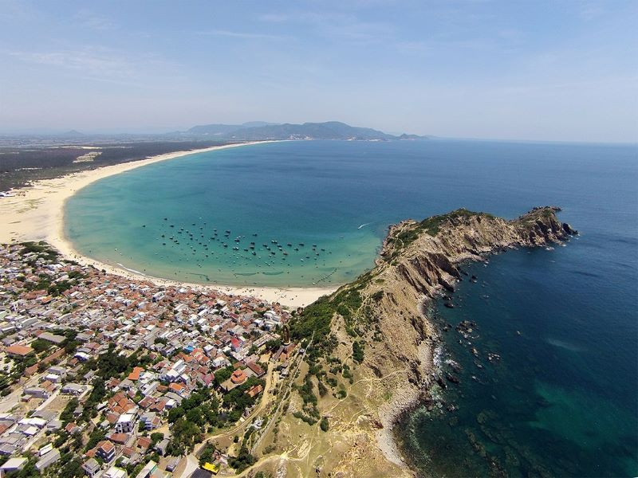

BÃI BIỂN QUẢNG NINH
Những bãi biển đẹp nổi tiếng của vùng Đông Bắc
Vẻ đẹp thiên nhiên





Quảng Ninh sở hữu nhiều bãi biển đẹp trải dài từ Hạ Long đến Móng Cái. Nơi đây nổi tiếng với làn nước trong xanh, bờ cát trắng mịn và phong cảnh thiên nhiên thơ mộng.
Bãi Cháy là bãi biển nhân tạo nổi tiếng của thành phố Hạ Long. Đây là điểm du lịch thu hút đông đảo du khách với các hoạt động vui chơi, nghỉ dưỡng và tắm biển.
Đảo Cô Tô được mệnh danh là thiên đường biển đảo của Quảng Ninh. Nước biển trong vắt cùng bãi cát dài tạo nên vẻ đẹp hoang sơ, yên bình.
Trà Cổ là một trong những bãi biển dài nhất Việt Nam, nổi bật với vẻ đẹp nguyên sơ và không khí trong lành.
Bờ biển dài
Bãi biển nổi tiếng
Lượt khách mỗi năm